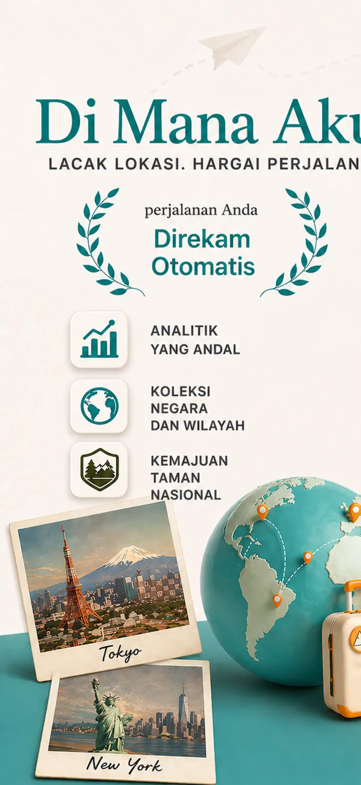
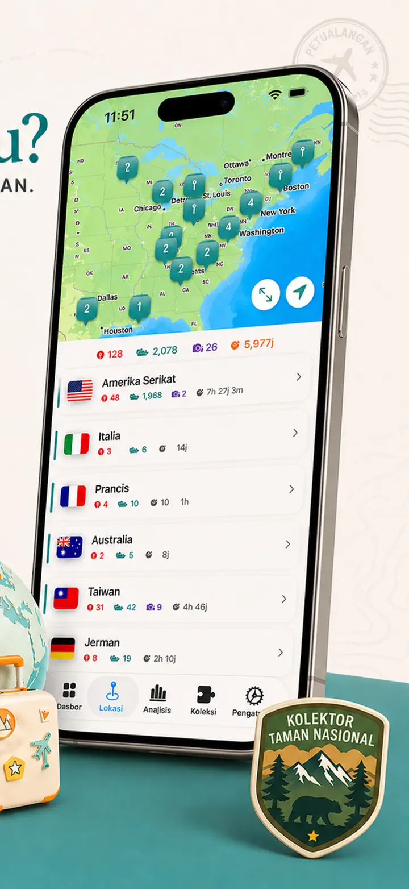
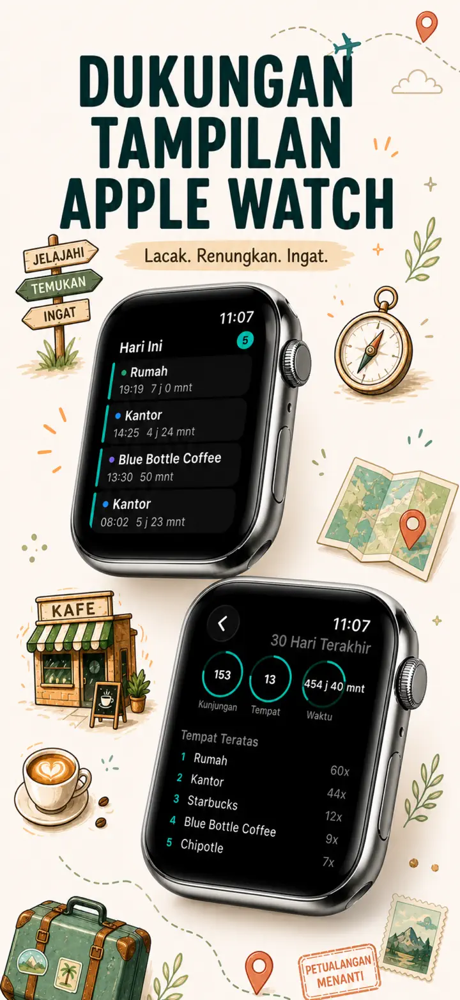
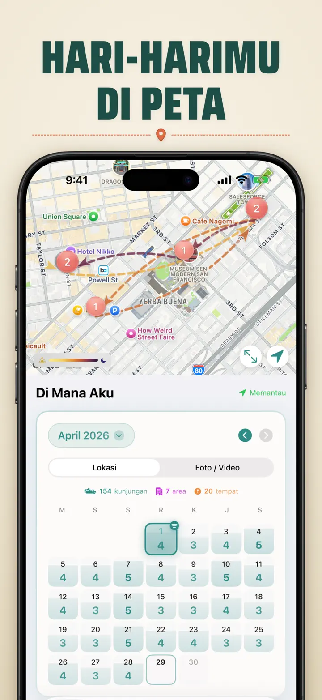
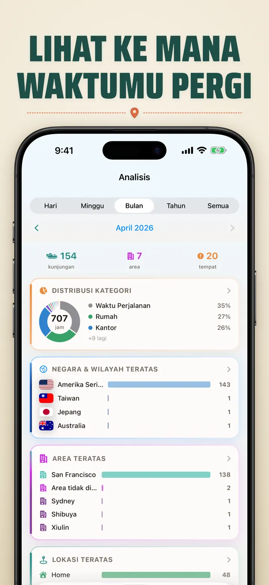
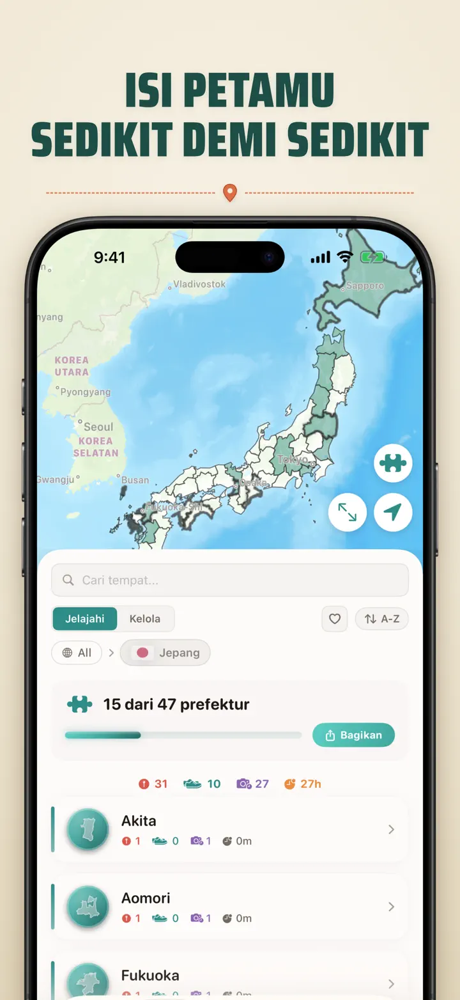
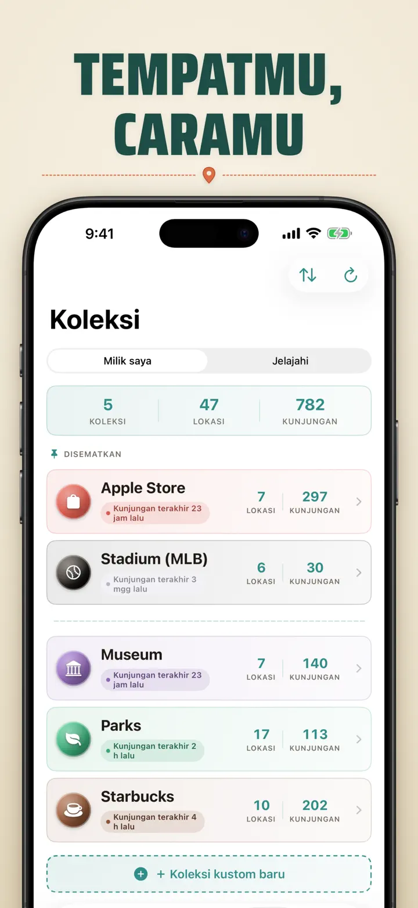
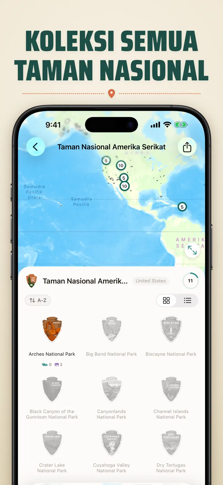
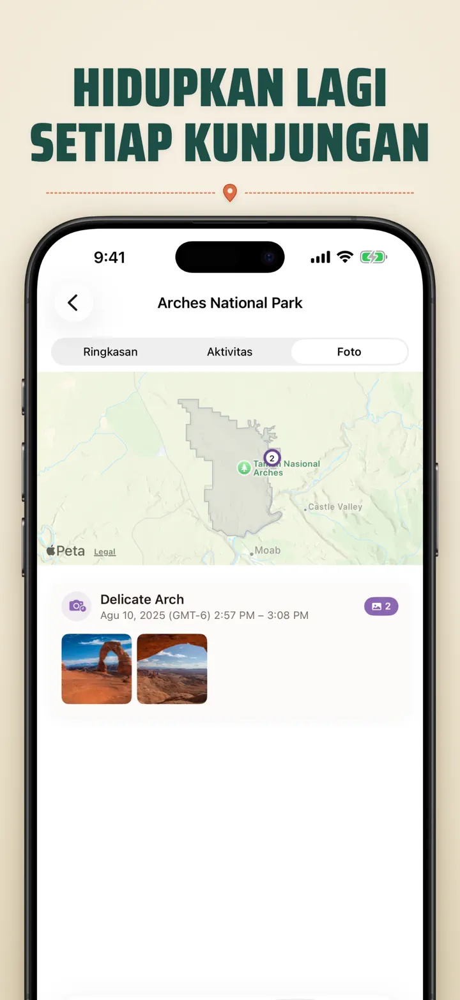

Di Mana Aku?
Lacak Tempat/Foto & Progres
Baru: 103 kuil Ichinomiya Jepang, masing-masing dengan lencana ukirannya. Pelacakan kunjungan otomatis dan timeline pribadi, semua di perangkatmu.
Unduh di App Store
Tentang aplikasi
Where was I ? — Memori Lokasi Pribadimu
Pernah coba ingat restoran enak yang kamu kunjungi bulan lalu? Where was I ? secara otomatis melacak kunjunganmu dan membuat timeline indah dari perjalanan hidupmu.
PELACAKAN OTOMATIS
Tidak perlu catat manual. Aplikasi ini diam-diam merekam saat kamu tiba dan pergi, menciptakan riwayat kunjungan detail tanpa usaha apa pun.
TAMPILAN KALENDER CERDAS
Lihat kunjunganmu per hari, minggu, atau bulan. Kalender intuitif menampilkan jumlah kunjungan dan tempat unik sekilas. Ketuk hari mana pun untuk melihat di mana kamu berada.
WIDGET LAYAR UTAMA & LAYAR KUNCI
Lihat kunjungan terbarumu dengan widget Layar Utama ukuran sedang. Widget Layar Kunci menampilkan lokasimu saat ini, timer durasi singgah langsung, atau jumlah kunjungan hari ini — semua dapat diketuk.
LOKASI TERORGANISIR
Lokasi otomatis dikelompokkan berdasarkan wilayah dan kota. Tetapkan kategori kustom seperti Rumah, Kantor, Gym, atau Kafe. Buat kategorimu sendiri dengan ikon dan warna kustom.
ANALITIK CANGGIH
Temukan pola dalam hidupmu:
- Distribusi waktu di setiap kategori
- Tempat yang paling sering kamu kunjungi
- Analisis ritme mingguan
- Tren frekuensi kunjungan
- Grafik durasi singgah per lokasi — lihat berapa lama biasanya kamu singgah, per hari, minggu, bulan, atau tahun
KOLEKSI WILAYAH NEGARA
Ubah perjalananmu menjadi puzzle! Lihat berapa banyak negara bagian, provinsi, atau wilayah yang kamu kunjungi. Bagikan sebagai gambar puzzle.
PROGRES TAMAN NASIONAL
Jelajahi alam bebas! Catat otomatis kunjunganmu ke taman nasional dan lacak progresmu bersamaan dengan lokasi harianmu.
100 KASTIL TERKENAL JEPANG
Sedang berkeliling Jepang? Koleksi bawaan baru melacak kunjunganmu ke 100 kastil terkenal negara ini. Temukan di tab Koleksi → Jelajahi → Jepang.
KOLEKSI KUSTOM
Lacak apa pun yang kamu mau — Apple Stores, museum, toko buku. Buat koleksi, atur kata kunci, dan biarkan terisi otomatis. Setiap koleksi menampilkan jumlah, riwayat, dan peta.
IMPOR RIWAYAT LOKASIMU
Datang dari aplikasi lain? Bawa seluruh riwayatmu — format terdeteksi otomatis, ekspor besar ditangani, dan kamu akan melihat pratinjau sebelum apa pun diimpor:
- Google Timeline (ekspor Google Maps atau Google Takeout)
- Arc Timeline (berkas .json bulanan yang kamu ekspor dari Arc)
- Moves (cadangan ProtoGeo / Facebook Moves)
MANAJEMEN MASSAL
Kelola semua lokasimu di satu tempat. Cari, urutkan, dan filter. Pilih beberapa lokasi untuk dikategorikan atau dihapus secara massal. Jaga pustaka lokasimu tetap rapi.
PRIVASI UTAMA
Data lokasimu tetap di perangkatmu. Tidak perlu akun. Tidak ada data dikirim ke server. Pergerakanmu adalah urusanmu.
COCOK UNTUK:
- Melacak jam kerja dan lokasi
- Mengingat restoran dan toko
- Menganalisis rutinitas harian
- Jurnal perjalanan dan taman nasional
- Laporan pengeluaran dan jarak tempuh
- Memahami alokasi waktu
FITUR:
- Deteksi kedatangan dan kepergian otomatis
- Tampilan kalender dengan timeline kunjungan harian
- Widget Layar Utama dan Layar Kunci dengan deep-linking
- Pengelompokan lokasi berdasarkan wilayah dan kota
- Kategori kustom dengan ikon dan warna
- Saran kategori cerdas dari Apple Maps
- Riwayat kunjungan detail dengan durasi
- Grafik durasi singgah per lokasi (hari / minggu / bulan / tahun)
- Dashboard analitik dengan insight
- Cari dan filter lokasi
- Koleksi wilayah negara dengan gambar puzzle yang dapat dibagikan
- Pelacakan progres taman nasional
- Koleksi bawaan 100 Kastil Terkenal Jepang
- Koleksi kustom dengan pencocokan kata kunci otomatis, edit manual, dan statistik
- Manajemen lokasi massal
- Impor dari Google Timeline, Arc Timeline, dan Moves
- Kemampuan ekspor
- Tidak perlu akun
- Desain berfokus pada privasi
Mulai bangun memori lokasimu hari ini. Download Where was I ? dan jangan pernah lupa tempat yang pernah kamu kunjungi.
Privacy Policy: https://masawata.net/privacy-policy.html Terms Of Service: https://www.apple.com/legal/internet-services/itunes/dev/stdeula/
Tangkapan layar








Di Mana Aku?
Baru: 103 kuil Ichinomiya Jepang, masing-masing dengan lencana ukirannya. Pelacakan kunjungan otomatis dan timeline pribadi, semua di perangkatmu.
Unduh di App Store